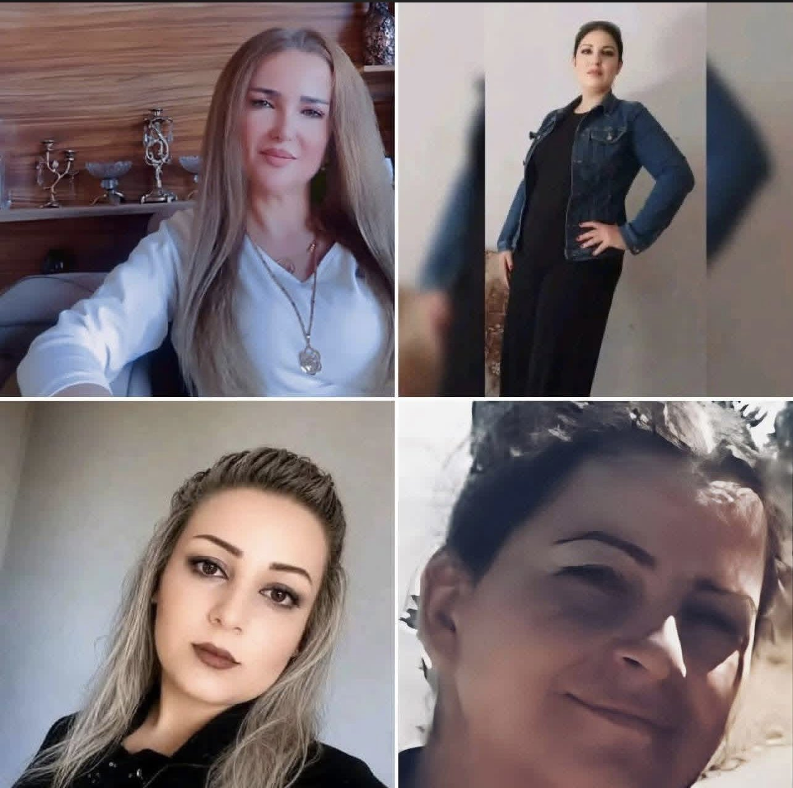

قضية رأي عام
قضية المختطفة بتول علوش
تاريخ التوثيق: مايو 2026

متابعة وتوثيق مستمر لكافة تفاصيل وملابسات قضية اختطاف الشابة بتول علوش، والمطالبات الحقوقية والشعبية المستمرة للكشف عن مصيرها ومحاسبة المتورطين...
اقرأ التقرير الكاملآخر الأحداث الموثقة
توثيق رقم #01
توثيق أحداث الساحل السوري

التاريخ: 28 مايو 2026
رصد وتوثيق شامل للانتهاكات والأحداث الأخيرة في مناطق ومدن الساحل السوري بالوقائع والأدلة الميدانية
اقرأ التقرير الكاملتوثيق رقم #02
تقرير الفيضانات وأثرها الإنساني
التاريخ: 25 مايو 2026
رصد وتوثيق الأضرار التي لحقت بمناطق الجزيرة السورية جراء السيول الأخيرة والتقصير الخدمي...
اقرأ التقرير الكاملتوثيق رقم #03
أرشيف شهادات الضحايا
التاريخ: 20 مايو 2026
جمع وتدوين شهادات حية من الأهالي والناجين حول الانتهاكات الأخيرة في ريف دمشق...
اقرأ التقرير الكامل